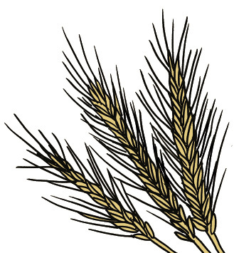
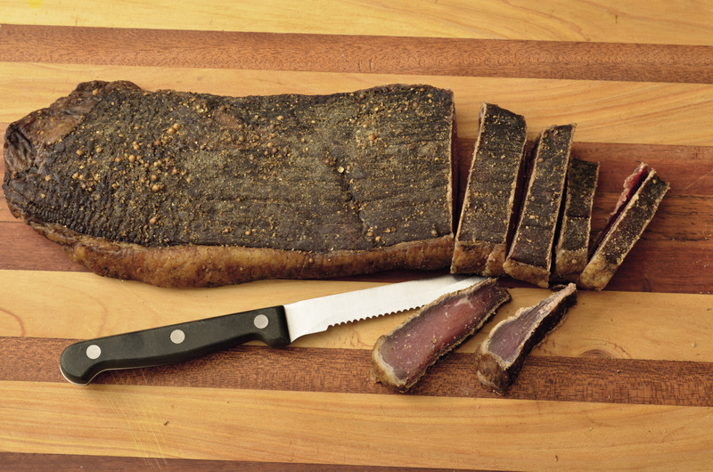

<div class="container">
  <div id="contents" class="col-md-12 main-content"><h1 xmlns="http://www.w3.org/1999/xhtml" id="toc-id-5">Extending the shelf life of food</h1>
    <p xmlns="http://www.w3.org/1999/xhtml" class="x--Body-opener">In the last chapter, you learnt about
    preserving metals by painting, galvanising and electroplating
    them. In this chapter, you will learn about different ways of
    preserving food, namely storing grain, pickling, drying and
    salting.</p>

   <figure xmlns="http://www.w3.org/1999/xhtml">


<figcaption>Figure 1</figcaption>
</figure>

   <figure xmlns="http://www.w3.org/1999/xhtml">


<figcaption>Figure 2</figcaption>
</figure>


   <figure xmlns="http://www.w3.org/1999/xhtml">


<figcaption>Figure 3</figcaption>
</figure>

    <h2 xmlns="http://www.w3.org/1999/xhtml" id="toc-id-6">Storing grain</h2>

    <p xmlns="http://www.w3.org/1999/xhtml" class="x--Body-Text">Food begins to spoil the moment it is
    harvested. Food preservation has been part of all cultures
    throughout history. Food preservation enabled ancient humans to
    live in one place and form a community, unlike the Bushmen who
    had to move from one place to another. The discovery of
    food-preservation methods meant that ancient humans no longer
    had to consume hunted animals or harvested food immediately.
    They could preserve some of their food to eat at a later
    time.</p>

    <p xmlns="http://www.w3.org/1999/xhtml" class="x--Body-indent">It is interesting that different
    cultures preserved their local food sources using the same
    basic methods of food preservation, for example heating,
    freezing, pickling, canning, salting, fermenting, drying and
    refrigerating.</p>

    <p xmlns="http://www.w3.org/1999/xhtml" class="x--Body-indent para-style-override-15">Food
    preservation is one of the oldest technologies. People ate what
    they grew on the land and what they hunted. They had to take
    good care of their food to prevent it from going off and making
    them ill. They also had to find ways of preserving food so that
    they would be able to eat even when there were no crops to
    harvest or when they could not hunt.</p>

    <div xmlns="http://www.w3.org/1999/xhtml" class="note">
      <p>Food preservation is about the treatment, handling
and storage of food to ensure that it does not lose
its nutritional value or quality. An important part
of food preservation is to create conditions that
prevent dangerous bacteria from growing.
</p></div>

    <p xmlns="http://www.w3.org/1999/xhtml" class="x--Body-indent-1-3">Grain is a <b>staple food</b> for most of the
    world. Different grains are eaten in different parts of the
    world, for example in China and Japan, rice is the staple grain
    that is eaten.</p>

    <p xmlns="http://www.w3.org/1999/xhtml" class="x--Body-indent-1-3">In South Africa, wheat and maize
    are the main grains that are grown and eaten. Maize is also
    used to make a fermented drink, a type of beer that some people
    drink on special occasions.</p>

    <div xmlns="http://www.w3.org/1999/xhtml" class="aside">
      <p class="x--Body-box-no-indent">A <b>staple food</b> is a food that is
      eaten most often by a group of people and forms the main part
      of the diet.</p>
    </div>

    <h4 xmlns="http://www.w3.org/1999/xhtml" class="x--Head-C">Structures for storing grain</h4>

    <p xmlns="http://www.w3.org/1999/xhtml" class="x--Body-Text">People have always had some method of
    storing their grain produce. Improvements in storage methods
    have also been observed over time and people used the right
    methods for their situation or need, for example storing grain
    in sacks. Grains produced by farmers who farm as a business and
    on a large scale are stored in "silos". These are huge cement
    or metal structures that hold the grain from many farms in one
    place until it can be used or exported. The silos keep the
    grain cool and free from moisture, insects and rodents.</p>

   <figure xmlns="http://www.w3.org/1999/xhtml">


<figcaption>Figure 4: A traditional Zulu grain silo</figcaption>
</figure>

    <div xmlns="http://www.w3.org/1999/xhtml" class="aside">
      <p class="x--Body-box-no-indent">A good storage container
      should:</p>

      <ul><li class="x--Body-box-bullet"> keep
        grain cool and dry,</li>

        <li class="x--Body-box-bullet"> protect
        grain from insects, and</li>

        <li class="x--Body-box-bullet"> protect
        grain from rats and mice.</li>
      </ul></div>

    <figure xmlns="http://www.w3.org/1999/xhtml">


<figcaption>Figure 5: Modern industrial grain silos</figcaption>
</figure>

    <h4 xmlns="http://www.w3.org/1999/xhtml" class="x--Head-C">The process of storing grain</h4>

    <p xmlns="http://www.w3.org/1999/xhtml" class="x--Body-text-1-3 para-style-override-17">Firstly,
    grains need to be harvested. Small-scale or subsistence farmers
    do this by hand. Figure 6 shows harvesting on a much bigger,
    industrial scale with a combine harvester and a tractor.</p>

    <p xmlns="http://www.w3.org/1999/xhtml" class="x--Body-indent-1-3 para-style-override-18">Secondly,
    the seed, which is the edible part of the grain, needs to be
    loosened from the plant's casing that protects the seeds. The
    casing is inedible and it is called "chaff". This process is
    called threshing. Figure 7 shows the seeds still in their
    casing.</p>

    <figure xmlns="http://www.w3.org/1999/xhtml">


<figcaption>Figure 6: Harvesting on an industrial scale with a combine harvester and a tractor</figcaption>
</figure>

    <p xmlns="http://www.w3.org/1999/xhtml" class="x--Body-indent-1-3">The third step is called
    "winnowing". Winnowing is the process whereby the loosened seed
    is separated from the chaff. Figure 8 shows the separated,
    edible seeds, and the inedible chaff in the bucket.</p>

    <figure xmlns="http://www.w3.org/1999/xhtml">


<figcaption>Figure 7: Wheat before harvesting, threshing and winnowing </figcaption>
</figure>

    <p xmlns="http://www.w3.org/1999/xhtml" class="x--Body-indent-1-3">There are various traditional
    winnowing techniques. Nowadays, people use combine harvesters
    to harvest, thresh and winnow.</p>

   <figure xmlns="http://www.w3.org/1999/xhtml">


<figcaption>Figure 8: Grain separated from the chaff</figcaption>
</figure>

    <p xmlns="http://www.w3.org/1999/xhtml" class="x--Body-indent-1-3 para-style-override-17">Fourthly,
    the grain is dried to prevent fungus and bacteria from growing
    on the seeds. The ideal moisture content for wheat is about
    14%.</p>

    <p xmlns="http://www.w3.org/1999/xhtml" class="x--Body-indent-1-3 para-style-override-17">Nowadays,
    people use grain-drying machines, but in the old days, people
    dried grain with the help of the sun. Figure 9 shows a modern
    grain-drying machine.</p>

    <p xmlns="http://www.w3.org/1999/xhtml" class="x--Body-indent-1-3 para-style-override-17">Finally,
    the dried grain is stored. The humidity and temperature of the
    air are the two most important factors here.</p>

    <p xmlns="http://www.w3.org/1999/xhtml" class="x--Body-indent">Warm, moist air will encourage
    bacteria and mould to live on and destroy the grain, even if
    the grain has been dried beforehand. Cool, dry air will help to
    keep the grain intact for longer.</p>

    <figure xmlns="http://www.w3.org/1999/xhtml">


<figcaption>Figure 9: A modern grain-drying machine </figcaption>
</figure>

   <figure xmlns="http://www.w3.org/1999/xhtml">


<figcaption>Figure 10: Schematic cross section of the air movement in a grain silo</figcaption>
</figure>

    <p xmlns="http://www.w3.org/1999/xhtml" class="x--Body-indent-1-3">There are all kinds of insects
    that damage grains, such as weevils and mites. Mites are very
    small insects that eat grains. Weevils are small insects that
    lay their eggs inside the grain. When the <b>larvae</b> hatch, they eat the
    seeds.</p>

    <div xmlns="http://www.w3.org/1999/xhtml" class="aside">
      <p class="x--Body-box-no-indent"><b>Larvae:</b> the stage of an
      insect's life after it's hatched from the egg, but before it
      has changed into a mature insect.</p>
    </div>

    <p xmlns="http://www.w3.org/1999/xhtml" class="x--Body-indent">Rodents, such as rats and mice, can
    also cause great damage to grains. They eat large amounts of
    grain if they're not controlled. Besides that, they carry
    deadly diseases that can contaminate the grain and spread to
    humans if consumed.</p>

    <p xmlns="http://www.w3.org/1999/xhtml" class="x--Body-indent">Now you can imagine that storing very
    large amounts of grain, for instance in a big, modern silo, is
    a complicated job, because air flow and temperature, insects
    and rodents, bacteria and fungi need to be controlled. But
    luckily, storing small amounts of grain is relatively easy. You
    need to put the grain into a clean, dry, airtight container and
    keep it in a cool place that is dry, with no direct sunlight or
    rodents.</p>

    <h2 xmlns="http://www.w3.org/1999/xhtml" id="toc-id-7">Pickling</h2>

    <p xmlns="http://www.w3.org/1999/xhtml" class="x--Body-Text">Most food products deteriorate as a
    result of the presence of micro-organisms, such as bacteria,
    yeast or mould. Remember that not all bacteria is harmful. We
    need good bacteria to perform certain functions in our bodies
    and to make certain food products, such as yoghurt and
    cheese.</p>

    <p xmlns="http://www.w3.org/1999/xhtml" class="x--Body-indent para-style-override-15">In the past,
    people had to store fresh food so that it was safe to eat long
    after it was harvested. There were no fridges or freezers to
    stop food from going off. Fruit and vegetables were dried,
    salted, pickled or made into jam so that they could be eaten
    long after they were picked. Dried, pickled, salted foods and
    jams meant that people had a bigger variety of food and
    nutrients in their diet for a longer time.</p>

    <div xmlns="http://www.w3.org/1999/xhtml" class="note">
      <p>Pickling possibly originated when food was placed
in wine or beer to preserve it. Both wine and beer
have a low pH level. People then found many uses
for the <b>brine</b> that was left over from the pickling
process.
</p></div>

    <div xmlns="http://www.w3.org/1999/xhtml" class="aside">
      <p class="x--Body-box-no-indent"><b>Brine</b> is a watery mix of
      vinegar and salt. Tomato sauce was an oriental fish
      brine.</p>
    </div>

    <p xmlns="http://www.w3.org/1999/xhtml" class="x--Body-indent-1-3">South Africa has a few favourite
    pickles. Achaar is a traditional pickle that was brought to our
    country by the Malay people more than a century ago. It can be
    eaten as a side dish or with curry, and is widely enjoyed,
    especially in the Western Cape. Achaar is made from vegetables
    such as cauliflower, carrots, cabbage and beans, that have been
    finely cut and are mixed together with mustard, turmeric,
    coriander, vinegar and sugar.</p>

    <div xmlns="http://www.w3.org/1999/xhtml" class="aside">
      <p class="x--Body-box-no-indent">What we know today as tomato
      sauce was originally an oriental pickle sauce for fish. It
      spread to Europe by the spice route, and eventually to
      America where someone added sugar to it. Spices were added to
      these pickling sauces to make tasty recipes.</p>
    </div>

    <p xmlns="http://www.w3.org/1999/xhtml" class="x--Body-indent-1-3">Chutney is another favourite
    South African pickled product, normally made with fruit.</p>

    <p xmlns="http://www.w3.org/1999/xhtml" class="x--Body-indent-1-3">For pickling, we can use salt and
    water or salt, water and an acid, usually vinegar.</p>

    <p xmlns="http://www.w3.org/1999/xhtml" class="x--Body-indent">Vegetables and fish are the two most
    common food types that are pickled. Pickling preserves the food
    because the brine creates an environment where oxygen is not
    present. Thus the micro-organisms contained in and around the
    food cannot grow and multiply and, in turn, cause the food to
    go bad.</p>

    <p xmlns="http://www.w3.org/1999/xhtml" class="x--Body-indent-1-3 para-style-override-21">The food
    to be pickled is placed in a clean glass jar. A hot brine mix
    is poured over the food and covers it completely. The brine is
    poured until the jar is full. A clean, tight-fitting lid seals
    the jar. Pickles last for many months, depending on the type of
    food.</p>

    <p xmlns="http://www.w3.org/1999/xhtml" class="x--Body-indent-1-3 para-style-override-21">Pickles
    have become very popular. There are many pickling recipes
    available, and people often experiment with different
    combinations of vegetables, herbs and spices.</p>

    <figure xmlns="http://www.w3.org/1999/xhtml">


<figcaption>Figure 11: Examples of pickled foods </figcaption>
</figure>

    
<h3 xmlns="http://www.w3.org/1999/xhtml" class="x--Head-investigation">Make your own pickles</h3>

    <p xmlns="http://www.w3.org/1999/xhtml" class="x--Body-Text para-style-override-6"><b>You will need the following ingredients for this activity:</b></p>

    <ul xmlns="http://www.w3.org/1999/xhtml"><li class="x--Body-text-bullet"> 6 pickling
      cucumbers, sliced in half lengthwise,</li>

      <li class="x--Body-text-bullet"> 1 red bell
      pepper sliced,</li>

      <li class="x--Body-text-bullet"> 1 cup
      water,</li>

      <li class="x--Body-text-bullet"> 1 cup
      white vinegar,</li>

      <li class="x--Body-text-bullet"> 1 cup
      white sugar,</li>

      <li class="x--Body-text-bullet"> 2
      <span>½</span> tablespoons pickling salt,</li>

      <li class="x--Body-text-bullet"> 2 cloves
      garlic, peeled,</li>

      <li class="x--Body-text-bullet"> 12 black
      peppercorns,</li>

      <li class="x--Body-text-bullet">
      <span>¼</span> teaspoon dried dill, and</li>

      <li class="x--Body-text-bullet">
         1 pinch
        crushed red pepper flakes.

        <div class="aside">
          <p class="x--Body-box-no-indent">A few rules for
          pickling:</p>

          <ul><li class="x--Body-box-bullet"> Use
            clean jars and lids.</li>

            <li class="x--Body-box-bullet">
            White vinegar is better to use as it does not discolour
            the vegetables the way brown vinegar would.</li>

            <li class="x--Body-box-bullet"> Use
            ingredients that are as fresh as possible.</li>
          </ul></div> 
      </li>
    </ul><p xmlns="http://www.w3.org/1999/xhtml" class="x--Body-investigation-hanging para-style-override-24">1. Using
    the ingredients listed above, prepare an instruction sheet for
    another group of learners to use in preparing their pickles.
    Write your instructions in point form. Show the flow of
    activities from start to finish.</p>
    <hr xmlns="http://www.w3.org/1999/xhtml"/><p xmlns="http://www.w3.org/1999/xhtml" class="x--Body-investigation-hanging para-style-override-24">2. Name
    and briefly discuss three advantages and three disadvantages of
    this method of food preservation.</p>
    <hr xmlns="http://www.w3.org/1999/xhtml"/>

    <h2 xmlns="http://www.w3.org/1999/xhtml" id="toc-id-8">Drying and salting</h2>

    <p xmlns="http://www.w3.org/1999/xhtml" class="x--Body-text-1-3">South African <b>biltong</b> is a rich inheritance
    from innovative Dutch settlers from the seventeenth century.
    They brought recipes for dried meat from Europe. They used the
    sun to dry meat during their trek across southern Africa.</p>

    <div xmlns="http://www.w3.org/1999/xhtml" class="aside">
      <p class="x--Body-box-no-indent">The word <b>biltong</b> is from the Dutch
      "bil" (rump) and "tong" (strip or tongue).</p>
    </div>
    
    <p xmlns="http://www.w3.org/1999/xhtml" class="x--Body-indent-1-3 para-style-override-26">The basic
    meat spices were readily available in the Cape Colony. The
    spices for making biltong include a dramatic blend of vinegar,
    salt, sugar, coriander and other available spices.</p>

    <p xmlns="http://www.w3.org/1999/xhtml" class="x--Body-indent-1-3 para-style-override-26">Drying is
    one of the oldest methods of food preservation. Drying
    preserves food by removing enough moisture from the food to
    prevent decay and spoilage.</p>

    <p xmlns="http://www.w3.org/1999/xhtml" class="x--Body-indent">The water content of properly dried
    food varies from 5% to 25%, depending on the type of food.</p>

    <figure xmlns="http://www.w3.org/1999/xhtml">


<figcaption>Figure 12: Biltong </figcaption>
</figure>

    <div xmlns="http://www.w3.org/1999/xhtml" class="note">
     <p>Successful preservation of food depends on
inhibiting the growth of micro-organisms such as
bacteria, and preventing access to insects.
</p></div>

    <p xmlns="http://www.w3.org/1999/xhtml" class="x--Body-Text">Answer the following questions:</p>

    <p xmlns="http://www.w3.org/1999/xhtml" class="x--Body-investigation-hanging">1. Explain what you
    understand the purpose of food preservation to be.</p>
    <hr xmlns="http://www.w3.org/1999/xhtml"/><p xmlns="http://www.w3.org/1999/xhtml" class="x--Body-investigation-hanging">2. In South Africa,
    there are many cultures and methods of food preservation. Name
    one culture and food type they preserve. Briefly explain the
    process this culture follows in preserving this food type.</p>
    <hr xmlns="http://www.w3.org/1999/xhtml"/><p xmlns="http://www.w3.org/1999/xhtml" class="x--Body-investigation-hanging">3. Explain the process
    of drying food for preservation purposes.</p>
    <hr xmlns="http://www.w3.org/1999/xhtml"/><p xmlns="http://www.w3.org/1999/xhtml" class="x--Body-investigation-hanging">4. Briefly discuss why
    salt is so important in the drying method of preserving
    food.</p>
    <hr xmlns="http://www.w3.org/1999/xhtml"/>
<h3 xmlns="http://www.w3.org/1999/xhtml" class="x--Head-investigation">Dry your own food</h3>

    <p xmlns="http://www.w3.org/1999/xhtml" class="x--Body-Text para-style-override-6"><b>Tip:</b></p>

    <p xmlns="http://www.w3.org/1999/xhtml" class="x--Body-text-1-3 para-style-override-28">When drying
    food, the key is to remove moisture as quickly as possible at a
    temperature that does not greatly affect the flavour, texture
    or colour of the food.</p>

    <div xmlns="http://www.w3.org/1999/xhtml" class="aside">
      <p class="x--Body-box-no-indent">Before you touch any food,
      wash your hands thoroughly to remove dirt and bacteria.</p>
    </div>

   <figure xmlns="http://www.w3.org/1999/xhtml">


<figcaption>Figure 13</figcaption>
</figure>

    <p xmlns="http://www.w3.org/1999/xhtml" class="x--Body-Text para-style-override-6"><b>You will need the following things for this activity:</b></p>

    <ul xmlns="http://www.w3.org/1999/xhtml"><li class="x--Body-text-bullet">
      spinach,</li>

      <li class="x--Body-text-bullet"> cold
      water,</li>

      <li class="x--Body-text-bullet"> a
      knife,</li>

      <li class="x--Body-text-bullet"> a large
      bowl, and</li>

      <li class="x--Body-text-bullet"> paper
      towels.</li>
    </ul><p xmlns="http://www.w3.org/1999/xhtml" class="x--Body-Text para-style-override-6"><b>Follow these steps:</b></p>

    <ul xmlns="http://www.w3.org/1999/xhtml"><li class="x--Body-text-bullet"> Find fresh
      spinach sold loose or in a bunch. Pick spinach that is crisp
      and green.</li>

      <li class="x--Body-text-bullet"> Fill a
      large bowl with cool water and add the spinach.</li>

      <li class="x--Body-text-bullet"> Rinse the
      spinach in the water to remove any dust or dirt
      particles.</li>

      <li class="x--Body-text-bullet"> Remove the
      water from the bowl and refill it with fresh, cool water.
      Continue to rinse out the spinach in fresh water until all of
      the gritty particles are gone.</li>

      <li class="x--Body-text-bullet"> Lift the
      spinach from the water and place it on a paper towel.</li>

      <li class="x--Body-text-bullet"> Roll
      spinach into sausage shapes, cover it with another paper
      towel and gently press on it to remove the moisture.</li>

      <li class="x--Body-text-bullet"> Replace
      the paper towel and gently press on the rolled spinach with a
      dry towel until all the water is removed.</li>

      <li class="x--Body-text-bullet"> Place the
      prepared spinach rolls, covered with paper towel, on a sieve
      and leave them in the sun to dry for a few days.</li>

      <li class="x--Body-text-bullet">
      <span>Place the dried spinach in a plastic container for
      storage until you need to cook it.</span></li>
    </ul><p xmlns="http://www.w3.org/1999/xhtml" class="x--Body-Text para-style-override-6"><b>Record your observations during this practical activity:</b></p>

    <p xmlns="http://www.w3.org/1999/xhtml" class="x--Body-investigation-hanging">1<a id="Anchor-11"/>. Describe what the fresh spinach looked
    like.</p>
    <hr xmlns="http://www.w3.org/1999/xhtml"/><p xmlns="http://www.w3.org/1999/xhtml" class="x--Body-investigation-hanging">2. List all the steps
    you took and explain why you did them.</p>
    <hr xmlns="http://www.w3.org/1999/xhtml"/><p xmlns="http://www.w3.org/1999/xhtml" class="x--Body-investigation-hanging">3. What was the effect
    of the weather conditions on your drying process?</p>
    <hr xmlns="http://www.w3.org/1999/xhtml"/><p xmlns="http://www.w3.org/1999/xhtml" class="x--Body-investigation-hanging">4. Indicate whether
    the results of this experiment were a success or not. Motivate
    your answer.</p>
    <hr xmlns="http://www.w3.org/1999/xhtml"/>

    
<h3 xmlns="http://www.w3.org/1999/xhtml" class="x--Head-investigation">What have you learnt?</h3>

    <p xmlns="http://www.w3.org/1999/xhtml" class="x--Body-Text">You have learnt how indigenous people
    long ago thought innovatively to develop ways of preserving
    food to extend its lifespan.</p>

    <p xmlns="http://www.w3.org/1999/xhtml" class="x--Body-indent">You have learnt how the principles of
    grain storage, pickling and drying of food assist in increasing
    the lifespan of food.</p>
    
<h3 xmlns="http://www.w3.org/1999/xhtml" class="x--Head-investigation">Next week</h3>

    <p xmlns="http://www.w3.org/1999/xhtml" class="x--Body-Text">Next week, you will learn more about
    reducing, re-using and recycling plastic to reduce its negative
    impact on the environment.</p>

    
  </div>
</div>